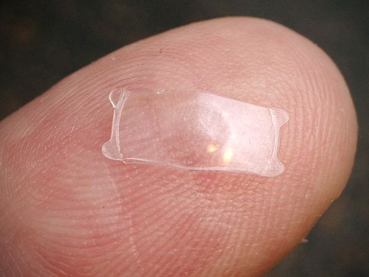

Are you ready to experience life with HD Vision and without the hassles of contacts and glasses?
Visian ICL, also known as Implantable Collamer® Lens, is one of the most exciting new breakthroughs in the field of enhanced vision care. Think of it as an implantable contact lens that works with your natural eye to correct your vision and gives you a lifetime of clear vision. After 15 years of study in Europe, insertable lenses are now approved by FDA to correct vision.
The Visian ICL is designed to correct moderate to high nearsightedness This procedure creates options for a much wider range of prescriptions that can free you from glasses and contacts. The Visian ICL is an excellent alternative for patients who are not comfortable with having LASIK, as well as, for patients with dry eyes, thin corneas and keratoconus. Anyone seeking clear vision may be a candidate for ICL, including patients with extreme or special vision correction needs. Can you imagine your life without glasses or contacts?
Dr. Brian is highly skilled and experienced with the the Ultrasound-Guided Visian ICL procedure. Due to his reputation as one of the world's best eye surgeons, Dr Brain was selected to be one of the first surgeons to perform this procedure after FDA approval. He has published results in medical literature and has made presentations at numerous medical conferences on Ultrasound-Guided Visian ICL™. Dr. Brian uses a specialized ultrasound device to determine the ideal size of the ICL. The ICL is customized to not just each person, but EACH EYE of each person.
Ultrasound-Guided Visian ICL™ Procedure
The actual Ultrasound-Guided Visian ICL™ procedure typically takes approximately 10 minutes and is performed on an outpatient basis. Normally, very little discomfort is associated with this procedure. A very powerful topical anesthetic eye drop is instilled in the eyes to keep your eyes numb and a mild sedative is given to keep your relaxed and comfortable. No needles or IV medications are ever used.
The Visian ICL is inserted into the eye through a small, micro incision. The lens unfolds in the eye and is positioned between the iris and the natural lens without stitches where it stays indefinitely.
You will come back the next day after the procedure for a follow-up visit with Dr. Brain. Typically, the patient’s vision will be improved the same day or the day after the procedure. In most cases, you will be able to resume driving and most activities after this follow-up visit. Eye drops and oral medications are prescribed to be used for a couple of weeks after the procedure to help with healing.
Watch the Visian ICL™ Procedure
POTENTIAL BENEFITS of Visian ICL™
ADVANCED LENS MATERIAL- Visian ICL™ is made of Collamer, an advanced lens material that is highly biocompatible collamer and does not cause a reaction inside the eye. Also, the material contains a UV filter that provides additional protection to the eye beyond sunglasses.
FLEXIBILITY- Visian ICL™ offers treatment flexibility. They are removable in case you need future vision procedures. Also, if your vision changes dramatically after receiving the implant, it can be replaced with a new prescription .
NO ALTERATIONS TO EYE- Visian ICL procedure does not alter any structures within the eye or alter the shape of your cornea and no eye tissue is removed.
QUALITY OF VISION- Internal lens is positioned to provide HD quality of vision that is sharp, clear, and vivid.
VISION IMPROVEMENT- Most patients can see immediate improvement in their vision after the procedure or the very next day.
COMFORT- Visian ICL provides comfort and no dry eyes.
NO MAINTENANCE- Visian ICL material is designed to last and be permanent. It made of 100% biocompatible collamer and will not degrade There is no need for maintenance.
WIDE RANGE OF VISION CORRECTION- Candidates for the Visian ICL include patients with extreme or special vision correction needs.
Watch Dr. Brian talk about Visian ICL™
What is Visian ICL™?
Who are good candidates for Visian ICL™?
What is the Visian ICL™ procedure?
Visian ICL™ Frequently Asked Questions (FAQ)
Over many years of performing the Ultrasound-Guided Visian ICL Procedure, Dr. Brian has compiled a list of frequently asked questions which his patients have asked him. After reviewing these FAQ, it you still have a question or a concern, please feel free to contact Boxer Wachler Vision Institute by calling (310) 594-5209. If you prefer, send us an Email or fill out our Contact Us form.
Click on a question below to view the answer
Where is the Visian ICL placed in the eye?
Visian ICL™ is placed in the “posterior chamber” – behind the iris (color portion of the eye) and in front of the eye’s natural lens. The lens does not touch any internal eye structures and stays in position with no special care or maintenance.
Will this procedure be painful?
NO. Powerful numbing drops are used to keep you comfortable during the procedures. There can be some slight pressure during the procedure, but overall patients say “that was easier than a visit to my dentist.”
What is the track and safety record of the Visian ICL?
The basic procedure is similar to cataract surgery with placement of an intra-ocular lens, which dates back to the 1940s. The Ultrasound-Guided Visian ICL™ procedure has been successfully performed since 1997 and was FDA approved in 2005. Prior to being placed on the market, the Visian ICL was subject to extensive research and development. Today, more than 550,000 lenses have been implanted worldwide. In a US clinical study, over 99 percent of patients were satisfied with their implant. The Visian ICL has a track record of excellent clinical outcomes. Additionally, the lens has been available internationally for over 15 years. With any procedure there is an element of risk, so it is extremely important to consult an experienced eye doctor, like Dr.Brian, who performs Ultrasound-Guided Visian ICL™ procedure regularly.
What if my vision changes after I receive the Visian ICL?
One of the the advantages to the Visian ICL™ is flexibility. If your vision did happen to change, the lens can be removed and replaced with a different power or another procedure can be performed at anytime. In addition, with Visian ICL™ you can wear glasses or contacts lenses if your vision did change.
Can lenses dry out and get dirty like contact lenses?
No. Patients who get dry eyes from traditional contact lenses may be ideally suited for Visian ICL™ since this lens cannot be felt. Visian ICL™ avoids problems experienced with traditional contact lenses. It is designed to remain in place and inside your eye, without maintenance. A routine, annual visit with your eye doctor is recommended to make sure everything is fine.
Who is the Visian ICL intended for?
The Visian ICL is designed to correct moderate to high nearsightedness (myopia).
I have Keratoconus. After my Visian ICL procedure, will glasses or contact lenses still be needed to correct my vision?
The answer depends upon the degree of your keratoconus and your prescription strength. Dr. Brian will review all you records and eye assessment tests with you. He will also give you realistic expectations for your vision after having the Visian ICL procedure. The expectations can range from likely not needing any correction lenses or needing to use weaker powered glasses or contact lenses.
Will others be able to see the Visian ICL visible in my eye?
No. The lens is positioned behind the iris (colored portion of the eye). This makes the lens invisible to both you and observers. You enjoy a cosmetic appearance that is natural. Only your doctor will be able to tell that vision correction has taken place.
Can the Visian ICL be felt inside my eye?
No. The lens is not noticeable after it is put in place; similar to a dental filling you don’t notice after it has settled into your teeth. It does not attach to any structures within the eye, therefore there is no pulling sensation. The lens is gently tucked behind the iris (colored portion of the eye) where it stays in position.
Does the Visian ICL stay in my eye permanently?
The Visian ICL™ is intended to remain in place without maintenance on a permanent basis. Should it become necessary, the lens can be removed by a certified ophthalmologist. At some point in life, most people regardless of having the Visian ICL™ or not will develop cataracts. At this point the Visian ICL™ lens will be removed along with your natural lens that has developed into a cataract and then a new clear lens will be inserted into the eye.
What are the potential risks of the Visian ICL?
The potential risks are suboptimal vision, infection, inflammation, loss of vision among others. To minimize any risks, Dr. Brian and every staff member is highly “detail-oriented” about every step of the process for every patient. Patient care and safety is paramount during every procedure performed by Dr. Brian.
Will I need to take time off from work and stay in bed?
Most patients take 1-2 days off work as “medical leave”. Patients typically drive and go back to work the day after the follow-up exam. The follow -up exams is the very next day after the procedure.
Do I have to stop my workouts after this procedure?
Patients usually resume light work-outs 3 days after the procedure and strenuous work-outs 1 week after procedure. We advise refraining from swimming or water sports for 2 weeks.
I live outside the Beverly Hills area. Does that make me ineligible to have the Visian ICL procedure with Dr. Brain?
Actually we have a number of patients who come from outside of Beverly Hills, as well as, outside the state and country. You will need to plan to be in the area for 7-8 days for preoperative exam, procedure and initial follow-up. Then it is no problem to have a qualified colleague of Dr. Brian’s assist with the after surgery follow-up care if that is more convenient. We are happy to coordinate your aftercare and assist you with local hotel accommodations if desired. You are also welcome to return to our office for follow-up care visits at 3 months and 12 months after the procedure.
To discover if you are a good candidate for Visian ICL™, schedule a personal consultation with Dr. Brian. Click here to schedule a consultation or call us at (310) 594-5209.
PATIENT TESTIMONIALS
Learn more about the Visian ICL procedure by listening to patients explain their Visian ICL experience with Dr. Brian.